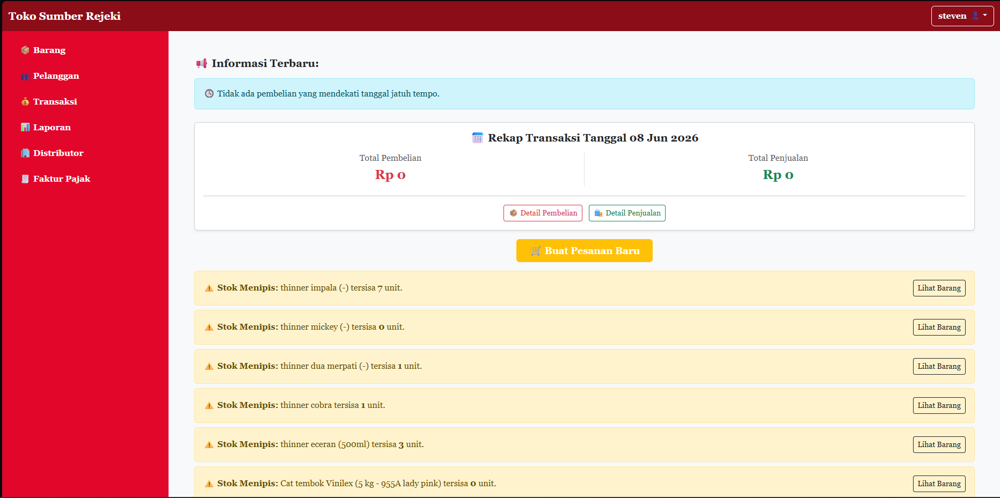

Independently designed and developed a web-based cashier and inventory management application using Laravel and MySQL. Key features include an automatic low-stock notification system, payment deadline reminders to distributors, basic inventory management, and automatic transaction tax calculation. Received a grade of 80.80 (A).
The project began with an in-depth analysis of client's requirements, identifying pain points such as manual stock tracking, missed distributor payment deadlines, and error-prone tax calculations. A literature review of comparable systems informed the feature set and technical architecture.
Built on the Laravel framework with a MySQL relational database, the application follows the MVC (Model-View-Controller) pattern for clean separation of concerns. The back-end handles business logic — including automated low-stock threshold detection that triggers real-time notifications, scheduled payment deadline reminders sent to distributors, and rule-based transaction tax calculation conforming to applicable tax regulations.
The front-end was designed with usability in mind, providing a streamlined cashier interface for quick point-of-sale transactions alongside a comprehensive inventory dashboard for monitoring stock levels, supplier information, and purchase history. The system was tested through functional testing and user acceptance testing, ultimately achieving a final grade of 80.80 (A).